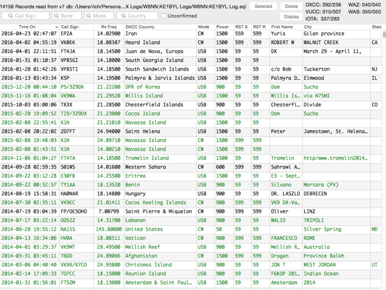

Wow! Thanks for letting us known Rich and congratulations to Anna, W6NN. Inspirational! And impressive! Wow! 73, Ted, K6XN From: Chat [mailto:chat-bounces@ncdxc.org] On Behalf Of KE1B via Chat
Check it out; it includes: Iran, Heard Island, Juan de Nova, South Georgia and South Sandwich, Palmyra, North Korea, Cocos Island, Navassa, Tromelin, Eritrea, the Vatican, Mellish Reef, Afghanistan, and some others. And oh, by the way, the ONLY entry for the United States in the past two years is NA1SS, the International Space Station. (Entries in green are confirmed, all via LoTW.) That’s probably the highest “rare-to-unrare” ratio I’ve ever seen. Rich KE1B  |